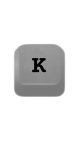

Primeiramente vamos ver quais são as teclas e oque elas fazem
Andar Para a Esquerda
Andar Para a Direita
Saltar
Objetivo
O ojetivo do jogo, é Derrotar todos os Monstros passando pela Cogulândia e pela Firest para chegar em sua floresta
Mas lembre-se, caso perca por algum dos inimigos terá que Derrotar todos novamente até Matar todos
Não se preocupe, Você terá corações Que vai lhe permitir tomar uma Quantia do que chamamos de "Hits"
Porém, o nosso PANGORO é invencivel, e tera habilidades com o a sua maior arma, o seu bastão de bambu.
Auxilios
Durante essa Jornada, você tera Varios auxilios, porém Pangoro tera que coletar esses Recursos um de cada vez antes de ir para sua luta
Para relembrar, você tera corações que vão lhe permitir Saber quanto te dano Pangoro ainda vai suportar
Além de Pangoro ficar cada vez mais Forte com os recusros coletados, ele poderá carregar seus Ataques para conseguir causar cada vez mais dano.